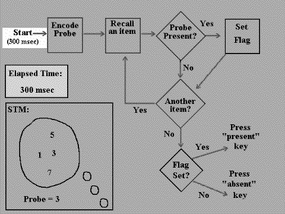

In the diagram below, each stage is highlighted as it occurs. Along with the highlighting, the real-time duration of the stage is indicated, and the elapsed time is incremented. (The durations of each stage are the same as those hypothesized in the description in Homework 2.) As each item in STM is checked, a check mark appears next to the item. If the item matches the probe, a flag appears next to it when it is checked.
As the animation proceeds, watch how the elapsed time increases with each stage, and watch how each item is checked in STM.
The animation automatically restarts, in an infinite loop. To stop it, click the STOP button at the top of your web browser. To start it again, from the beginning, click the RELOAD button.

Compare this with the animation for self-terminating serial search.